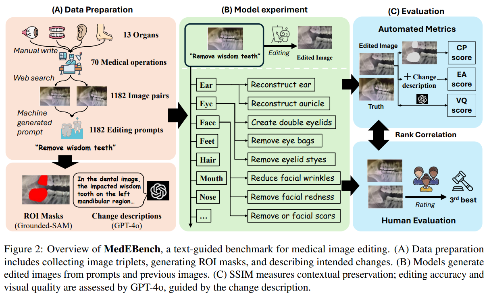

-
A Benchmark for Evaluating Purchase Intention Comprehension Abilities of Large Language Models in E-commerce
Wenxuan Ding*, Weiqi Wang*, Sze Heng Douglas Kwok, Minghao Liu, et al.
Findings of EMNLP 2024
[arXiv] |
[code]
-
MedEBench: Revisiting Text-instructed Image Editing on Medical Domain
Minghao Liu, Zhitao He, Zhiyuan Fan, Qingyun Wang, Yi R. Fung
Submitted to EMNLP 2025 (OA3 | Meta3 😓)
[arXiv] |
[website]
